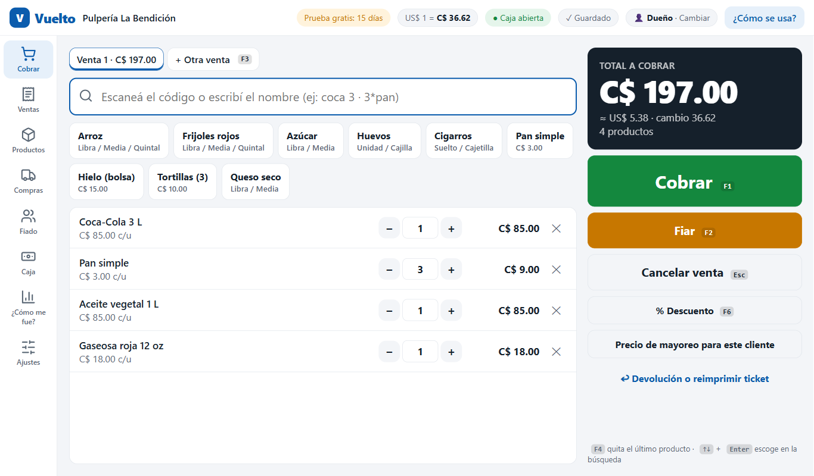
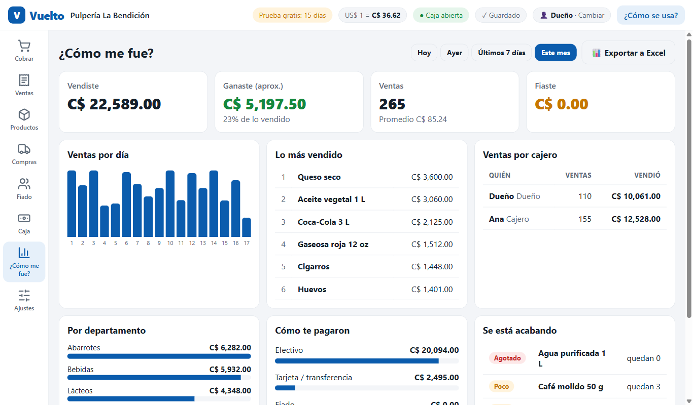
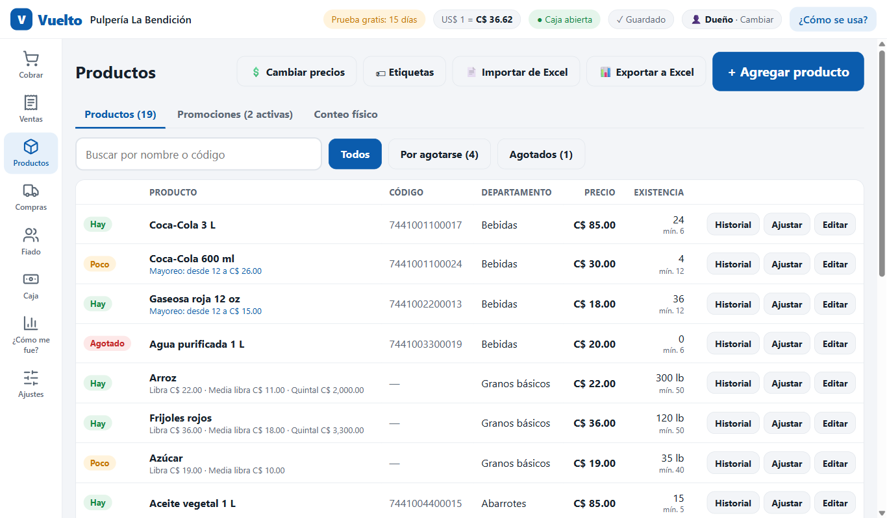
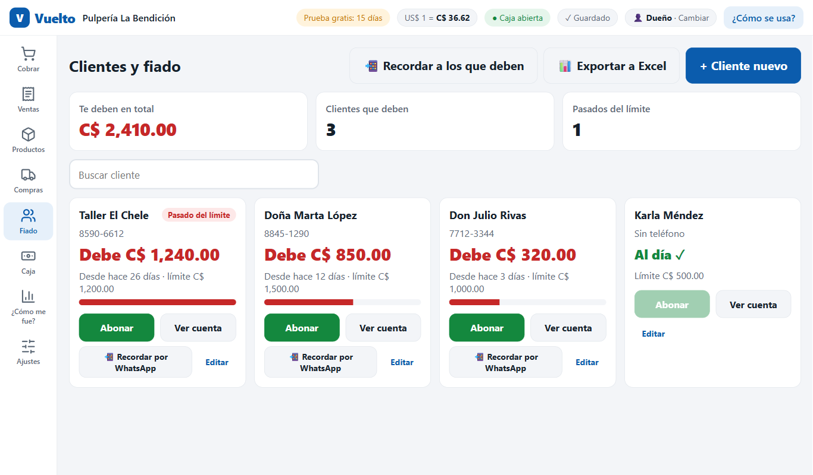
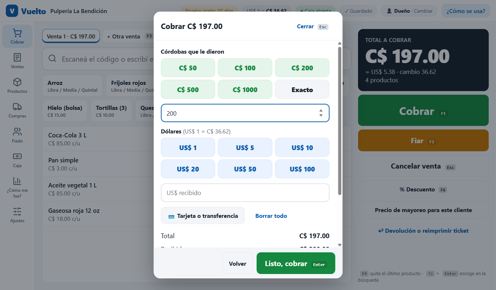

🛒 Cobrar en segundos
Escaneá el código o escribí «coca 3». Teclas rápidas (F1 cobrar, F2 fiar), varias ventas abiertas a la vez y el vuelto calculado en córdobas y dólares.
Hecho en Nicaragua · para tiendas de Nicaragua
Vuelto lleva tus ventas, tu inventario, el fiado, la caja y las facturas de la DGI. En córdobas y dólares, con voseo y sin enredos: si sabés usar WhatsApp, sabés usar Vuelto.

Pensado para el mostrador: botones grandes, teclas rápidas y cero palabras raras.
Escaneá el código o escribí «coca 3». Teclas rápidas (F1 cobrar, F2 fiar), varias ventas abiertas a la vez y el vuelto calculado en córdobas y dólares.
Cada venta descuenta la existencia. Te avisa lo que se está acabando y arma el pedido sugerido para el proveedor. Ventas por libra, media libra, quintal o unidad.
La cuenta de cada cliente con límite de crédito, abonos y cuánto tiempo lleva debiendo. Recordale el pago por WhatsApp con un toque.
Abrí con tu fondo, anotá entradas y salidas y al cerrar Vuelto te dice si sobró o faltó, por cajero.
Cuánto vendiste y cuánto ganaste hoy, en la semana o en el mes. Lo más vendido, por cajero y por departamento.
Numeración consecutiva, IVA desglosado, original y copia, anulación el mismo día y notas de crédito. Para cuota fija o régimen general.
Dos o más compus cobran juntas con los mismos productos, clientes y facturas, por el router de la tienda. Sin internet y sin números repetidos.
Cada sucursal manda su resumen por WhatsApp o USB y la principal ve todo junto. También para pasar mercadería de una a otra.
Exportá inventario, ventas, fiado, compras y facturas a Excel con formato, totales y filtros. Y cargá tus productos desde Excel.
Cada cajero entra con su PIN y vos decidís qué puede hacer. Los descuentos, devoluciones y cambios de precio quedan anotados.
Una copia diaria automática, en una USB y gratis en OneDrive o Google Drive. Si se va la luz, cada venta ya quedó guardada.
Imprime en impresoras térmicas de 58 y 80 mm o en hoja carta, con tu logo. Abre el cajón del dinero al cobrar en efectivo.




Al empezar escogés qué tipo de tienda tenés y Vuelto enciende solo lo que te sirve. Una pulpería sigue siendo sencilla.
Fiado, venta suelta por libra o media libra, dólares y recargas. Lo justo, sin complicaciones.
Todo lo de la pulpería más precio especial por cliente y crédito a empresas con plazo.
Venta por metro, pie o yarda, proformas que se convierten en venta, apartados y precios por cliente.
Lotes y vencimientos (vende primero lo que vence primero) y libro de medicamentos controlados con datos de la receta.
Listas escolares armadas que se agregan de un solo a la venta, y proformas para colegios.
Tallas y colores con su propia existencia, apartados y cambio de prenda con saldo a favor.
Al instalar, Windows puede decir «Windows protegió su PC». Tocá Más información y luego Ejecutar de todas formas. Es normal en programas nuevos.
Sin contratos amarrados. Escogé cómo querés pagar.
Pagás mes a mes mientras lo usés. Incluye las actualizaciones y el soporte por WhatsApp. Si un mes se atrasa el pago, tenés 7 días de gracia.
Preguntar el precioPagás una sola vez y el programa es tuyo en esa compu, para siempre.
Preguntar el precioCada compu que cobra lleva su licencia. La prueba de 15 días es completa y no pide tarjeta.
No. Vuelto trabaja en tu compu y guarda todo ahí. El internet solo se usa para mandar mensajes por WhatsApp, buscar actualizaciones y, si querés, subir el respaldo a OneDrive o Google Drive.
Cada venta se guarda en el momento en que la cobrás. Cuando vuelve la luz, todo está como lo dejaste.
Una compu con Windows 10 u 11. No hace falta que sea nueva. Para cobrar más rápido podés usar un lector de código de barras USB, que funciona sin configurar nada.
Funciona con impresoras térmicas de tickets de 58 u 80 mm instaladas en Windows, y con impresoras normales para hojas carta. El cajón del dinero se abre si está conectado a la impresora térmica.
Sí. Una compu es la principal y las otras se conectan por el router o el WiFi de la tienda, sin internet. Comparten productos, clientes y facturas, y cada caja cuadra su propio dinero.
Sí, con numeración consecutiva, IVA desglosado, original y copia, y notas de crédito. Para usarlas necesitás tu número de autorización de la DGI.
Tus datos se quedan en tu compu, no en un servidor ajeno. Cada persona entra con su PIN y Vuelto hace un respaldo diario automático.
Los cargás de un solo: Productos › Importar de Excel. Sirve el archivo .xlsx tal cual.